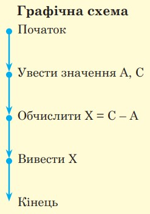
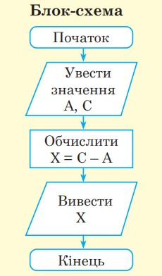
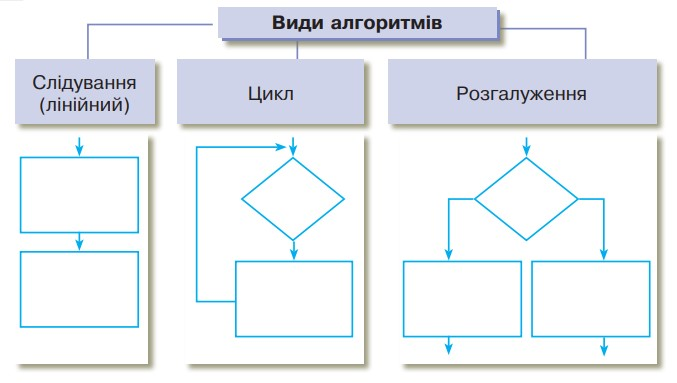
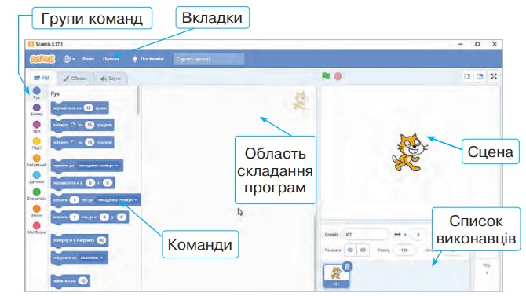

Алгоритм — чітка послідовність команд, виконання яких призводить до розв’язання поставленої задачі.
Способи опису алгоритмів
Словесний
Словесно-формульний
Блок-схема
Графічна схема
Словесний спосіб — це словесно сформульована послі довність правил перетворення інформації.
Словесно-формульний — це поєднання формул пере творення інформації та словесного визначення послі довності їх виконання.
Графічна схема — представлення алгоритму у вигляді, системи точок, кожна з яких визначає певну дію, та стрілок, які вказують перехід від однієї дії до іншої.
Блок-схема — форма представлення алгоритму, коли процес розв’язування задачі поділяють на окремі етапи (або операції), що подаються у вигляді спеціальних блоків, конфігурація яких указує на тип дій.
Словесний спосіб
Щоб знайти невідомий доданок, треба від суми відняти відомий доданок.
Словесно-формульний
a + x = c
x = c – a


Базові алгоритмічні структури
Характерною особливістю базових алгоритмічних структур є наявність в них одного входу і одного виходу.

Слідування — це така форма організації вказівок в алгоритмі, за якої дії виконуються послідовно одна за одною, без пропусків або повторень.
Розгалуження — це така форма організації дій, коли залежно від виконання або невиконання певної умови виконується одна з двох вказівок.
Цикл (повторення) — це тип алгоритму, у виконання якого одну або кілька команд потрібно повторити кілька разів або завжди.
Будова вікна Scratch
Scratch — це спеціальна програма, яка дає змогу створювати і виконувати алгоритми для виконавців з визначеною системою команд.
Графічний об'єкт Scratch:

Програмні об’єкти
Програмні об’єкти середовища Scratch — спрайти або виконавці. Кожен спрайт може мати кілька образів (костюмів).